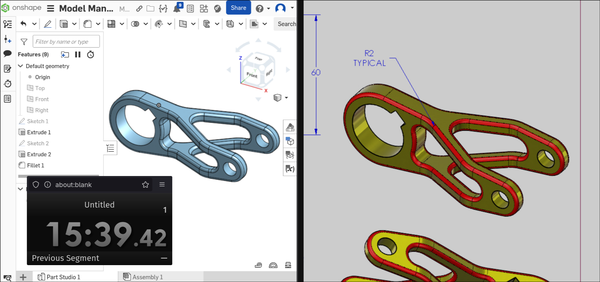

This week was all about the basics of CAD and 2D design with laser cutters. Even though I already have a little bit of experience with CAD, but I still tried to have some fun with these assignemnts.
The main assignment for this week was to create a box to store our project. Since I plan on pursuing an electronics project, I decided to create a simple small box with several dividers for organization. My box should be the perfect size to store some electrical components and breadboard prototypes. I created my model inside Onshape and then used the drawing feature in order to get a DXF that could be laser cut.
The box has four sides which are each connected by finger joints. The bottom of the box is connected to the rest of the box through scoring. The dividers simply slide in with some cleverly placed cuts. I needed to use some hot glue to ensure that my box wouldn't break, but the dividers nicely constrain one of the parallel sets of sides.
Our next assignment was to follow a CAD tutorial, but since I already knew some CAD and couldn't find an interesting tutorial, I tried to work through a Solidworks Model Mania challenge for some much needed practice.
A Model Mania challenge typically has two phases: the first phase entails designing a model based on a given technical drawing, the second phase involves modifying the original model. The goal is to create the most accurate model in the least amount of time. I timed myself completing phase 1 and got a time of 15 minutes and 39 seconds. For comparison, the SolidWorks tutorial completes it in a little less than 10 minutes and (according to heresay) an experience CADer can complete it in around 5.
Here's the Model Mania phase 1 model!
Then, for the last part of this week's assignment, I modeled various objects in the lab and created an assembly.
I found a pretty complicated looking measuring device and tried to model it, creating an assembly with the two parts it comprised. The assembly has a revolute and slider joint to mimic how the tool functions in real life.
Here's the model of the more complicated part of the weird measuring device Here's the model of the simpler part of the weird measuring device
I also modeled a much simpler measuring device
And to keep in theme with Model Mania, I also made some really unhelpful technical drawings to better show off the models: